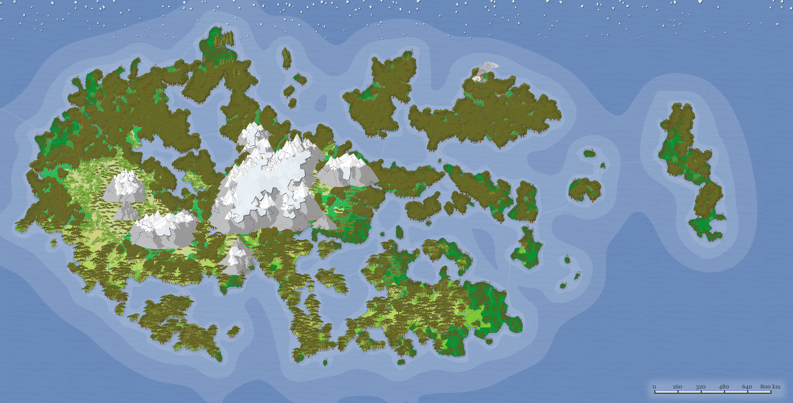
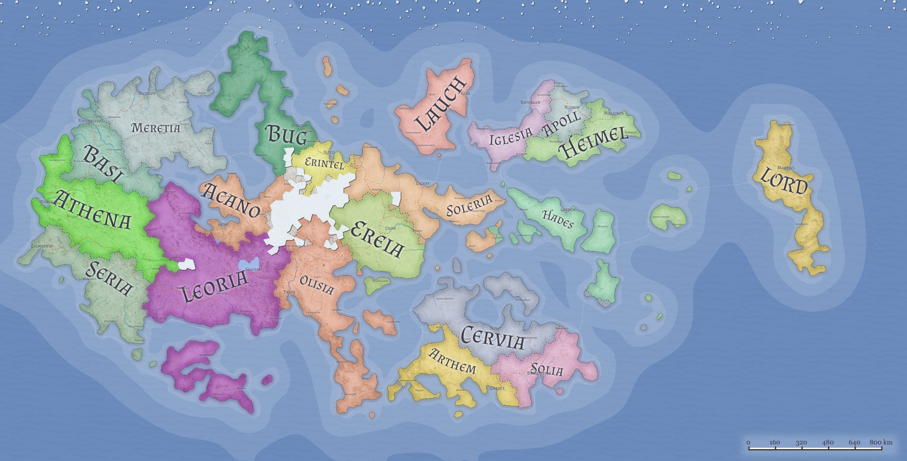

.jpeg)
MESTRE POKÉMON


REGIÃO DE LUNAC
Bem-vindo à misteriosa região de Lunac
Este é o berço dos Pokémon, onde as lendas dizem que os primeiros Pokémon surgiram das sombras que dançam sob a luz da lua. Lunac é um lugar envolto em mistério e fascínio, onde ruínas antigas guardam segredos há muito esquecidos, aguardando corajosos exploradores para desvendá-los.
As terras de Lunac estão impregnadas com uma aura de antiguidade, onde as árvores sussurram segredos esquecidos e as brisas noturnas carregam ecos de um passado distante. Ruínas ancestrais se estendem pelas paisagens, suas paredes de pedra testemunhando eras perdidas e ocultando enigmas que desafiam a compreensão humana.
Em meio à escuridão da noite, as estrelas parecem sussurrar histórias de tempos imemoriais, enquanto criaturas misteriosas espreitam nas sombras, curiosas e selvagens, evocando um sentimento de maravilha e temor.
Prepare-se para uma jornada épica através das terras de Lunac, onde cada passo revela um novo mistério, e cada descoberta desperta a imaginação. Aventure-se nessas terras antigas, e quem sabe, você pode desvendar os segredos que há muito tempo foram esquecidos pela história...
Bem-vindo à Encantadora Região de Lunac! 🌟
Em meio a uma atmosfera mágica e cheia de mistérios, Lunac aguarda ansiosamente pela sua exploração! Dividida em 20 distritos, cada um guardando segredos que desafiam a compreensão do mundo Pokémon.
Escola Pokémon de Athena: O Primeiro Passo na Jornada! 🎓
Onde os sonhos se tornam realidade! Antes de embarcar em sua jornada, todos os treinadores devem passar pelos sábios ensinamentos e intensos treinamentos oferecidos pela renomada Escola Pokémon de Athena. É aqui que os verdadeiros heróis se forjam!
Explore, Faça Amigos e Capture! 🚀
Após escolher o seu destino, você estará pronto para desbravar o vasto mundo de Lunac. Faça amizades inesquecíveis, desvende mistérios ocultos e embarque em uma aventura épica para capturar o mais diversos monstrinhos que habitam o mapa.
A sua jornada em Lunac está prestes a começar. Prepare-se para momentos emocionantes, desafios emocionantes e descobertas surpreendentes. O que você está esperando? Aventure-se agora mesmo e deixe a magia de Lunac envolver você! ✨🌟
